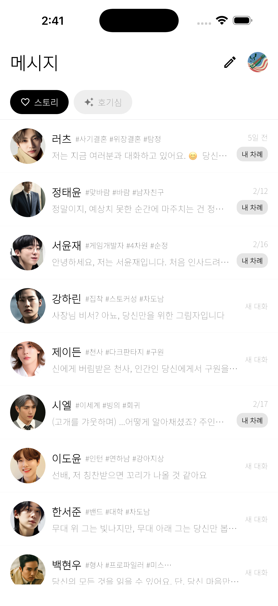

chat_components / dark
Real-capture crop tiles sourced from
route_chat
(dark)

Status Bar
Top status indicators
Chat Header
Title + actions area
Suggestion Chips
Horizontal chip row
AI Bubble 1
Primary assistant message bubble
AI Bubble 2
Secondary assistant bubble variant
User Bubble
User-side reply bubble
Insight Card
Rich result card cluster
Input Bar
Message input + voice action